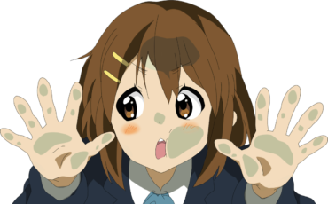

CV de Foranero Zamora
Fotógrafo profesional
8 años de experiencia trabajando en la fotógrafia
gastronómica y de producto
Formación
- Fotógrafia profesional
- 2016-2020. Escuela Activa de Fotógrafia
- Tratamiento de color para cine (etalonaje)
- 2017-2020. SAE Institute
- Retroespectrografia de la luz y proyeccion en medios semiplasmaticos
- 2022-2022. Universidad Autonoma Metropolitana

Experiencia Profesional
- Sally Hansen
- 2018-2019. Fotógrafo de catalogo en linea y fotógrafo publicitario
- Nikonistas Mexico
- 2019-2022. Creador de contenido digital para redes sociales
- New Icon Models
- 2019-2020. Retocador y fotógrafo
- Estudio Fotografico True Tone
- 2020-Actualmente. CEO y fotógrafo en jefe
- Corsa Films
- 2023-Actualmente. Fotógrafo gastronómico y de producto
- Gourmet Show
- 2023-2023. Fotógrafo gastronómico de la exposicion Gourmet Show en WTC CDMX
Informacion adicional
- Certificado Master en Adobe Photoshop por Adobe International
- Certificado Master en Adobe Lightroom por Adobe International
- Certificado Master en Adobe Premiere por Adobe International
- Certificado Master en Davinci Resolve por Blackmagic